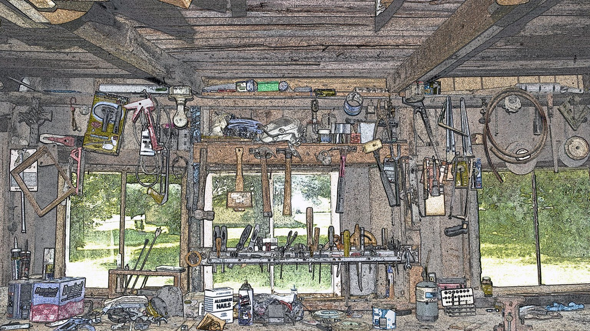

「継ぐ人がいないから、自分の代で畳むしかない」——そう口にする経営者に、これまで何人も会ってきました。
この記事は、後継者不在で会社の先行きに迷っている中小企業の社長さんに向けたものです。読み終える頃には、「継がせる／畳む」の二択の前に、まだ打てる手が一つあると気づいてもらえるはずです。
私自身、一人で会社をやっている身として、「自分がいなくなったら回らない」怖さは他人事ではありません。今日はその不安に、AIという角度から向き合ってみます。
そもそも「後継者不在」で失われているのは何か
後継者がいない、と聞くと「社長の座に座る人がいない」問題に見えます。
でも実際に困るのは、もっと具体的なことです。
- どの取引先を、どういう順番で大事にしてきたか
- 値決めや値引きを、どんな基準で判断してきたか
- 「この案件は受けない」と決めるときの、線引き
これらは契約書にも決算書にも載っていません。全部、社長の頭の中にあります。
会社が畳まれるとき、本当に消えるのはこの「判断の蓄積」です。設備や顧客リストは引き継げても、判断の基準は引き継がれないまま消えていく。ここが一番もったいない。
手順1｜「自分にしか下せない判断」を10個書き出す
まずやることは、AIの導入ではありません。紙とペンで十分です。
先週、あなたが下した判断を思い出してください。
- 見積もりをいくらにするか決めた
- ある依頼を断った
- 社員の相談に、こう答えた
こうした「自分が判断したこと」を、思いつくまま10個ほど書き出します。
大げさな経営判断でなくていい。日々の小さな決めごとの中に、その会社らしさは宿っています。
書き出してみると、「これは自分でなくてもいい」ものと、「これは自分の基準がないと無理」なものが分かれてきます。後者こそが、残す価値のある判断です。
手順2｜判断の「理由」を言葉にする
次に、書き出した判断の一つひとつに「なぜそう決めたのか」を添えます。
たとえば「この案件を断った」なら——
> 納期が短すぎて品質が落ちる。安く受けて評判を下げるより、断ったほうが長い目で得だから。
この一文が宝物です。
判断そのものより、判断の裏にある「考え方」を言葉にできると、それは他人にもAIにも引き継げる形になります。
ここまでくると、社内の誰かに任せる道も、AIに補助させる道も、両方が見えてきます。継がせるにしても畳むにしても、この棚卸しは無駄になりません。
手順3｜言葉にした判断を、AIに「相棒」として持たせる
判断の基準が言葉になったら、それをAIに読み込ませて、相談相手として使う方法があります。
私たちが「AIwill（社長クローンAI）」で取り組んでいるのは、まさにここです。
社長の判断の考え方をAIに覚えさせ、「こういうとき、社長ならどう考えるか」を後継者や社員が相談できるようにする。答えを丸ごと出す機械ではなく、判断のクセを映した壁打ち相手、というイメージです。
これは「社長を機械に置き換える」話ではありません。人が最終判断をするための、下敷きを残す取り組みです。
継ぐ人が見つかったときには引き継ぎの土台になり、当面一人で続けるなら心強い相棒になります。
まとめ｜畳む前に、判断だけは残せる
後継者不在は、すぐには解けない重い課題です。それでも、今日から手をつけられることがあります。
- 会社が畳まれて本当に消えるのは、社長の頭の中の「判断の基準」
- 手順1：自分にしか下せない判断を10個書き出す
- 手順2：それぞれに「なぜそう決めたか」を添える
- 手順3：言葉にした基準を、AIに相棒として持たせる
まずは紙に10個書き出すところから。それだけで、会社が積み重ねてきたものの輪郭が見えてきます。
AIで面倒を減らすのは入口にすぎません。空いた時間と、残した判断で、その先の「どう続けるか」を一緒に考える。それが私たちのやりたいことです。
楽ではなく、楽しいを考える。 会社の畳み方を考える前に、残し方を一度だけ考えてみませんか。
この記事と同じ内容を、公式noteでも公開しています。 公式note 記事一覧